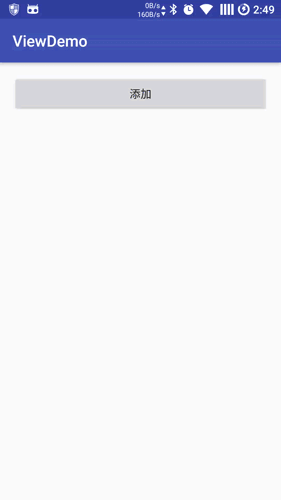

简介
LayoutTransition是在 API11 的时候引入的，用来设置当布局发生变化时的动画效果。有时候当我们addView、removeView 或者设置 View 的 GONE、VISIBLE 时，不想让布局的变化显得很突兀，想有一个过渡的效果，就在xml布局文件中设置android:animateLayoutChanges="true"属性，这个属性就是用到了LayoutTransition。我们来看看官方提供的默认的动画是什么样子的：
先从ViewGroup的构造方法中看起:
|
|
点进去initFromAttributes方法：
|
|
可以看到当我们设置android:animateLayoutChanges="true"的时候，其实就是调用了setLayoutTransition(new LayoutTransition());设置默认的动画效果。我们今天主要来看看LayoutTransition这个类：
|
|
在LayoutTransition的构造方法中给我们实现好了默认的动画效果，总共包含4中动画效果，分别是：
APPEARING：View出现动画，当View在父容器中出现时候的动画；DISAPPEARING：View消失动画，当View在父容器中消失时候的动画；CHANGE_APPEARING：由于某些View出现在父容器中时，容器中其他的View而发生变化时的动画；CHANGE_DISAPPEARING：由于某些View在父容器中消失时，容器中其他的View而发生变化时的动画。
我们可以调用setAnimator给LayoutTransition分别设置这些动画。
代码片段
|
|
